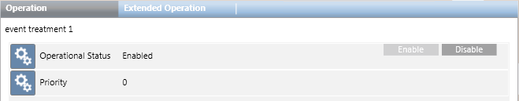

When you select an event settings rule, the Operation tab displays its properties and commands.

Property
Description
Commands
Operational Status
Indicates whether the event setting rule is enabled (meaning it is available to be run by the user):
Enabled: the event setting rule is currently active, and the Disable command is available.
Disabled: the event setting rule is currently inactive, and the Enable command is available.
Disable: Disabling an event settings rule prevents it from being executed by any operators or stations, while still retaining the event settings rule within the system. For example, you might do this for event settings rules that are not yet complete or ready to be put into general use.
Enable: Enabling an event settings rule makes it available to be executed by all authorized users of the system or by Desigo CC itself. If an event settings rule is disabled, you must enable it before you can execute it. Newly-created event settings rules are enabled by default.